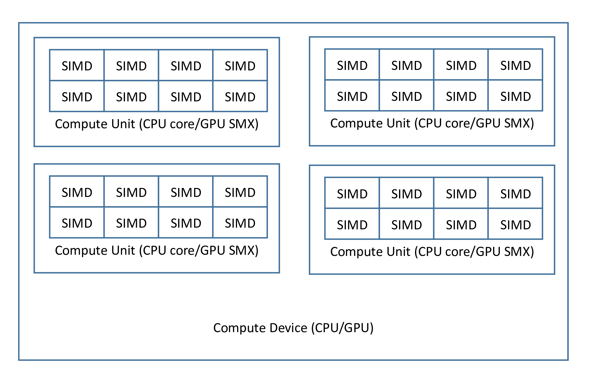

PSCMC kernel function usage
1 Introduction
The PSCMC kernel function (called kernel ) is designed for executing parallel kernels on multiple platforms. When a kernel is called, it will be executed in parallel. Currently it supports C, OpenMP, CUDA, OpenCL and SWMC parallel environments. The codes below demostrate the use of kernels in the SCMC language.
kernel.kernel.scmc:
(defkernel muladd ((double* A) (double* B) (double* C))
(vector-set! A __global_idx (+ (vector-ref A __global_idx) (* (vector-ref B __global_idx) (vector-ref C __global_idx)))))
main.scmc:
(
begin (
include< "stdio.h")
(
include< "stdlib.h")
(
include< "omp_pscmc_inc.h")
(
include< "kernel.kernel_inc.h")
(
defun main int ((int argc) (char** argv))
(
define-omp_pscmc_env env)
(
define-omp_muladd_struct muladd1)
(omp_pscmc_env_init (
"&" env)
0 NULL)
(omp_muladd_init (
"&" env) (
"&" muladd1))
(
declare-omp_pscmc_mem vA vB vC)
(
define-const-long VLEN
16)
(omp_pscmc_mem_init (
"&" env) (
"&" vA) PS_DOUBLE_NUM VLEN)
(omp_pscmc_mem_init (
"&" env) (
"&" vB) PS_DOUBLE_NUM VLEN)
(omp_pscmc_mem_init (
"&" env) (
"&" vC) PS_DOUBLE_NUM VLEN)
(
define-double* vA_h (omp_pscmc_get_h_data (
"&" vA) NULL))
(
define-double* vB_h (omp_pscmc_get_h_data (
"&" vB) NULL))
(
define-double* vC_h (omp_pscmc_get_h_data (
"&" vC) NULL))
(
declare-int i)
(for (set! i 0) (< i VLEN) i++
(vector-set! vA_h i i)
(vector-set! vB_h i (* 5.00000000000000000e-01 i))
(vector-set! vC_h i (+ 5.00000000000000000e-01 i)))
(omp_pscmc_mem_sync_h2d (
"&" vA))
(omp_pscmc_mem_sync_h2d (
"&" vB))
(omp_pscmc_mem_sync_h2d (
"&" vC))
(omp_muladd_scmc_set_parameter_A (
"&" muladd1) (
"&" vA))
(omp_muladd_scmc_set_parameter_B (
"&" muladd1) (
"&" vB))
(omp_muladd_scmc_set_parameter_C (
"&" muladd1) (
"&" vC))
(omp_muladd_exec (
"&" muladd1)
1 VLEN)
(omp_pscmc_mem_sync_d2h (
"&" vA))
(omp_pscmc_mem_sync_d2h (
"&" vB))
(omp_pscmc_mem_sync_d2h (
"&" vC))
(for (set! i 0) (< i VLEN) i++
(fprintf stdout "%e\n" (vector-ref vA_h i)))
(omp_pscmc_mem_destroy (
"&" vA))
(omp_pscmc_mem_destroy (
"&" vB))
(omp_pscmc_mem_destroy (
"&" vC))
(return
0))
)
local_header.h:
#include <stdio.h>
#include <math.h>
#include <assert.h>
#define IDX_OPT_MAX 1
Using the following commands to compile the program.
PREFIX=omp_
cp $SCMC_ROOT/pscmc_openmp_inc.scmc ${PREFIX}pscmc_inc.scmc
echo "(define-scmc-global PREFIX '$PREFIX)">${PREFIX}pscmc.scmc
cat $SCMC_ROOT/pscmc_openmp.scmc >> ${PREFIX}pscmc.scmc
scmc_parallel_compile_passes kernel.kernel.scmc OpenMP $PREFIX
scmc_compile_passes ${PREFIX}pscmc.scmc C host ${PREFIX}pscmc.c $PREFIX
scmc_compile_passes ${PREFIX}pscmc_inc.scmc C host ${PREFIX}pscmc_inc.h $PREFIX
scmc_compile_passes main.scmc
gcc -fopenmp main.c kernel.kernel.c kernel.kernel_runtime.c ${PREFIX}pscmc.c -o kernel_test
The output of kernel_test should be something like:
$ ./kernel_test
0.00000000000000000e+00
1.75000000000000000e+00
4.50000000000000000e+00
8.25000000000000000e+00
1.30000000000000000e+01
1.87500000000000000e+01
2.55000000000000000e+01
3.32500000000000000e+01
4.20000000000000000e+01
5.17500000000000000e+01
6.25000000000000000e+01
7.42500000000000000e+01
8.70000000000000000e+01
1.00750000000000000e+02
1.15500000000000000e+02
1.31250000000000000e+02
The defkernel keyword is used to define kernel functions in the PSCMC language. The __global_idx is a built-in variable to refer the current index of the parallel kernel. For other APIs and built-in variables you may refer to c files generated in this directory.
2 Understanding the kernel execution
2.1 The __idx and __idy variable
Modern parallel compute devices may have multiple level of parallelism. For example, an CUDA GPU have multiple SM (or SMX), each SM (or SMX) has a lot of CUDA cores, a modern CPU generally has multiple cores, each core has one or more SIMD vector units. To release all the computing powers, the programming interface should also need multiple level of parallelisms.

Figure: The architecture of a compute device.
In the host side, the ${PREFIX}_${KERNELNAME}_exec function takes 3 arguments p_kernel, __xlen and __ylen. The p_kernel is a pointer which points to the kernel data structure, [__xlen, __ylen] is the shape of the kernel. Usually the kernel will be invoked __xlen*__ylen times simultaneously, and the execution can be grouped into __ylen groups, each group contains __xlen kernel executions. These __ylen group executions will be mapped into all available compute units in one compute device, and for each group the __xlen kernel executions will be mapped into SIMD/SIMT components of one compute units.
In the device side, there are 5 built-in variables __idx, __idy, __xlen, __ylen and __global_idx in the kernel environment. The __xlen and __ylen are the same as the host side parameter when calling ${PREFIX}_${KERNELNAME}_exec, __idx is used to obtain the indices of the __xlen executions in one group, __idy is used to obtain the indices of the group. The __global_idx=__idx+__idy*__xlen is the global index of the kernel execution.Note that in CPU runtimes (i.e. C, OpenMP and SWMC), such treatment will increase many unnecessary codes to make sure SIMD instructions is executed exactly as we wanted, which is very insufficient. So in CPU runtimes __xlen should be always 1 and __idx is always 0, and the SIMD level parallelisms is achieved using another particularly designed statements.
| Parallelism level | PSCMC | CUDA | OpenCL | CPU |
|---|
| SIMD | __idx | threadIdx.x | get_local_id () | always be 0 |
| SIMD | __xlen | blockDim.x | get_local_size () | always be 1 |
| Core/SMX | __idy | blockIdx.x | get_group_id () | __idy |
| Core/SMX | __ylen | gridDim.x | get_num_groups () | __ylen |
| Global ID | __global_idx | blockIdx.x * blockDim.x + threadIdx.x | get_global_id () | __idy |
Table: Correspondence of multiple parallel runtimes.
2.2 Shared/Local memory and local synchronization
Kernel executions in one group can utilize the shared/local memory on the chip, and they can be synchronized. These features can be accessed using dec-local_shared-array and sync-local. Note that in CPU runtimes (C, OpenMP, SWMC) shared memory will become standard memory and local synchronization will be ignored.
Suppose the __xlen=32,
(begin
(dec-local_shared-array double shared_var 32)
(vector-set! shared_var __idx 0.00000000000000000e+00)
(sync-local))
The shared_var can be accessed and shared for the same __idy kernel execution group. It act as the same as __shared__ double shared_var [32] in CUDA and __local double shared_var [32] in OpenCL. The sync-local is the same as __syncthreads() in CUDA and barrier() in OpenCL.
3 On the SWMC environment
The sunway many-core architecture is different from GPU and conventional CPU. For example the SW26010 CPU has four clusters, each cluster contains 1 Management Processing Element (MPE) and 64 Compute-Processing Elements (CPEs). The MPE is just like a common CPU, it can run operation system and MPI based parallel codes. However the CPE is a simplified CPU, it only has 64KiB scratchpad memory for data that should be explicitly managed by the programmer. So to achieve high bandwidth memory operations, using some specificated APIs provided by the following PSCMC macros is suggested.
(
begin (define-scmc-global VOLATILE-FREE
#f)
(
defmacro GET_SPARSE_MEMORY (dest from num_block b_stride b_size . sync_id)
(
case RUNTIME ('SWMC `
(
if (
* ,num_block ,b_size)
(
begin (,
(if VOLATILE-FREE
'define-int
'define-volatile-int)
lgd_swmc
0)
(
define-const-size_t data_size (sizeof-var (
vector-ref ,from
0)))
(,
(
if VOLATILE-FREE
(if (eq? VOLATILE-FREE 1)
'athread_get_procedure
'swmc_athread_get_procedue)
'athread_get)
PE_MODE ,from ,dest (
* ,b_size ,num_block data_size) (
"&" ,
(if (null? sync_id)
'lgd_swmc
(car sync_id))
)
0 (
* (
- ,b_stride ,b_size) data_size) ,
(if (eq? b_size b_stride)
0
`(* ,b_size data_size))
)
,
(if (null? sync_id)
`(while (neq? lgd_swmc 1))
`(incf! ,(concat (car sync_id) '_swmc_shadow)))
)
)
) (
else `(
block (
inner-for-from-to inner_step
0 ,num_block
(inner-for-from-to inner_g 0 ,b_size
(vector-set! ,dest (+ (* inner_step ,b_size) inner_g) (vector-ref ,from (+ (* inner_step ,b_stride) inner_g))))
)
))))
(defmacro GET_CONT_MEMORY (dest from b_size . sync_id)
`(GET_SPARSE_MEMORY ,dest ,from ,b_size 1 1 unquote sync_id))
(
defmacro PUT_SPARSE_MEMORY (dest from num_block b_stride b_size . sync_id)
(
case RUNTIME ('SWMC `
(
if (
* ,num_block ,b_size)
(
begin (,
(if VOLATILE-FREE
'define-int
'define-volatile-int)
lgd_swmc
0)
(
define-const-size_t data_size (sizeof-var (
vector-ref ,from
0)))
(,
(
if VOLATILE-FREE
(if (eq? VOLATILE-FREE 1)
'athread_put_procedue
'swmc_athread_put_procedue)
'athread_put)
PE_MODE ,from ,dest (
* data_size ,b_size ,num_block) (
"&" ,
(if (null? sync_id)
'lgd_swmc
(car sync_id))
) (
* data_size (
- ,b_stride ,b_size)) ,
(if (eq? b_size b_stride)
0
`(* ,b_size data_size))
)
,
(if (null? sync_id)
`(while (neq? lgd_swmc 1))
`(incf! ,(concat (car sync_id) '_swmc_shadow)))
)
)
) (
else `
(
inner-for-from-to inner_step
0 ,num_block
(inner-for-from-to inner_g 0 ,b_size
(force-v-set! (vector-ref ,dest (+ (* inner_step ,b_stride) inner_g)) (vector-ref ,from (+ (* inner_step ,b_size) inner_g))))
)
)))
(defmacro PUT_CONT_MEMORY (dest from b_size . sync_id)
`(PUT_SPARSE_MEMORY ,dest ,from ,b_size 1 1 unquote sync_id))
(
defmacro INIT_ASYNC_IO_LOCK (name)
(
case RUNTIME ('SWMC `(,
(if VOLATILE-FREE
'declare-int
'declare-volatile-int)
(,name
0) (,(concat name '_swmc_shadow)
0))) (
else '())))
(defmacro WAIT_SPARSE_MEMORY (sync_id)
(case RUNTIME ('SWMC `(while (neq? ,sync_id ,(concat sync_id '_swmc_shadow)))) (else '())))
)
For example a many-core version of memory copier can be written as:
(
defkernel copy_example ((double* a) (double* b) (long len))
(
define-long one_size
64)
(
dec-array double tmp_buffer one_size)
(INIT_ASYNC_IO_LOCK sync_id)
(
define-long buff_loc)
(
if (
eq? __idx
0)
(
for (set! buff_loc (
* __idy one_size)) (
< buff_loc len) (incf! buff_loc (
* __ylen one_size))
(
define-int numcp
(if (< (+ buff_loc one_size) len)
one_size
(- len buff_loc))
)
(GET_CONT_MEMORY tmp_buffer (
+ b buff_loc) numcp sync_id)
(WAIT_SPARSE_MEMORY sync_id)
(PUT_CONT_MEMORY (
+ a buff_loc) tmp_buffer numcp sync_id)
(WAIT_SPARSE_MEMORY sync_id))
)
)
The full version of this code can be obtained at kernel.scmc .